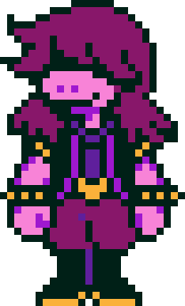

Susie é uma das principais personagens de Deltarune e uma das companheiras de Kris durante a aventura. Ela é uma estudante da mesma escola que Kris e, inicialmente, possui uma personalidade agressiva e intimidadora.
Susie é uma personagem alta, de pele roxa e aparência semelhante à de um dinossauro ou réptil. Ela possui cabelos longos e roxos, que cobrem parte do rosto, além de dentes grandes e afiados.
Ela usa principalmente o uniforme escolar, composto por uma camisa clara, calça escura e um colete ou peça de roupa roxa. Durante sua aventura nos Dark Worlds, seu visual muda um pouco, passando a incluir roupas mais adequadas para uma personagem de fantasia. No Dark World, Susie utiliza uma grande capa e outros acessórios que combinam com seu papel de guerreira. Seu visual reforça sua personalidade forte e seu estilo de combate baseado em força física.
No começo da história, Susie costuma agir de maneira rude com outras pessoas e não demonstra muito interesse em seguir regras. Ela também possui uma aparência bastante marcante, com pele roxa, cabelos longos e roupas escuras.
Apesar de seu comportamento inicial, Susie começa a mudar depois de entrar no primeiro Dark World. Durante sua aventura com Kris e Ralsei, ela passa a demonstrar preocupação com seus companheiros e começa a desenvolver amizades.
No Capítulo 1, Susie inicialmente não confia em Ralsei e não demonstra interesse pela missão. Entretanto, conforme a aventura avança, ela começa a gostar da companhia de Kris e dos outros personagens.
No Capítulo 2, sua amizade com Kris e Ralsei continua se desenvolvendo. Susie também passa a demonstrar mais claramente seu lado amigável e protetor.